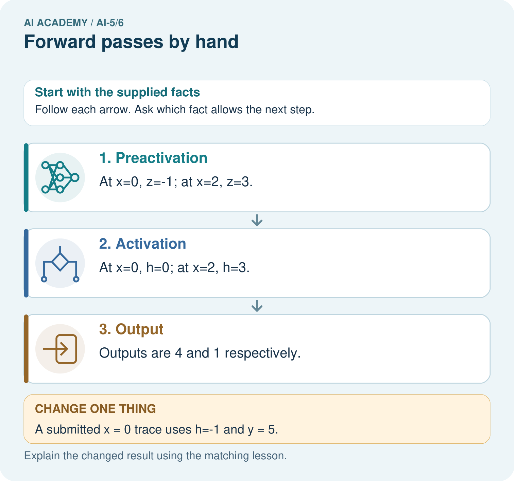
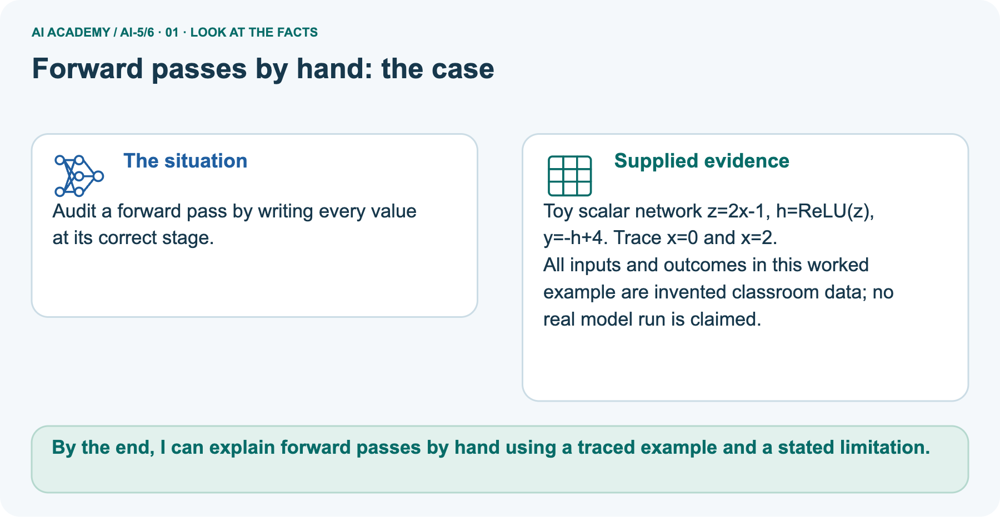
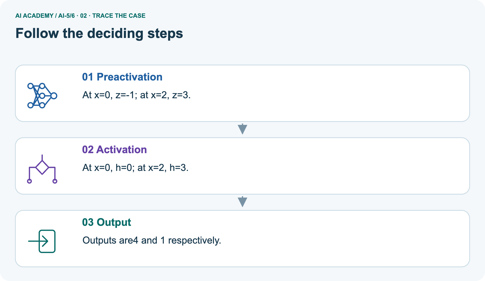
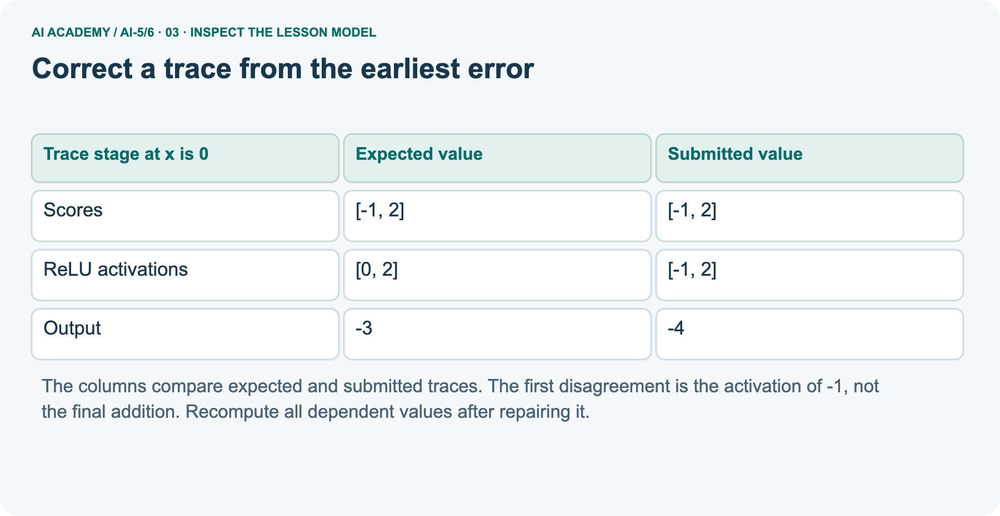
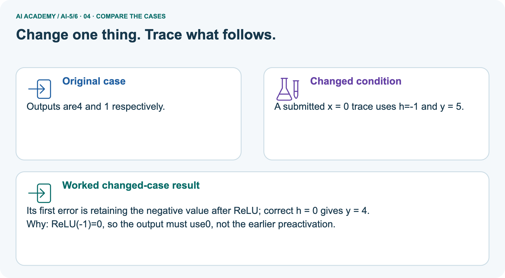
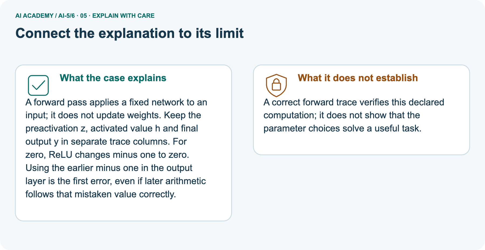
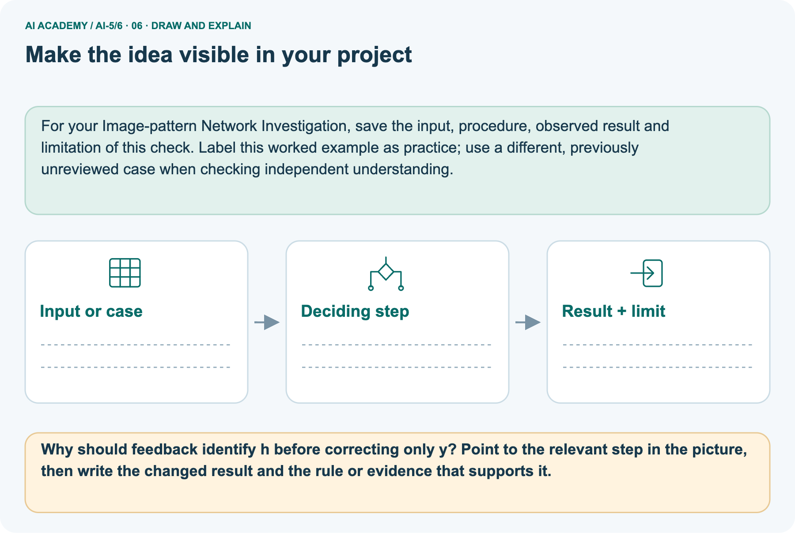

AI Academy · Level 5 · Grade 10 · Week 6 · Workbook
Forward passes by hand
Learn to understand, design, build, test and explain AI systems responsibly.
Project: Image-pattern Network Investigation
Workbook · 1 of 15
Recall and choose your starting point
Record your starting explanation for Forward passes by hand before opening notes. Show any later correction separately.
Try the recall before opening notes. Then use a different colour or a labelled second line to correct your explanation.
Composing layers
Without opening the old lesson, explain one key idea from Composing layers. Give an example and a mistake that the idea helps you avoid.
Bias terms and decision boundaries
Without opening the old lesson, explain one key idea from Bias terms and decision boundaries. Give an example and a mistake that the idea helps you avoid.
Workbook · 2 of 15
Practise with fading help
Complete the supported Forward passes by hand trace and record the first step you can explain without help.
Use W2: Locate a bias omission for Forward passes by hand. Record the answer once; the lesson and workbook refer to the same attempt.
| Given inputs | Procedure I chose | Middle steps | Result and check |
|---|---|---|---|
Workbook · 3 of 15
Individual reasoning check
Check the proposed Forward passes by hand explanation against the supplied facts before discussing it.
Use the worked case for Forward passes by hand. Proposed explanation: “ReLU means the output cannot be negative”. Decide whether this explanation is supported.
Point to the step or supplied fact that decides; explain your repair if needed.
Workbook · 4 of 15
Independent transfer case
Write one first attempt at the reserved independent case before feedback. Repeated copies of that case refer to the same recorded attempt.
Independent case: Audit a different network independently
Use z1 = x + 1, z2 = 2 - 2x, h = ReLU(z) component by component, and y = 2h1 + h2 - 3. Trace x = 0 and x = 2. A submitted x = 2 trace uses h = [3, -2] and y = 1. Find its first error and correct all later values.
Attempt this case before feedback. Record any help. Earlier examples below are further practice; a case already practised with feedback cannot establish fresh transfer.
Workbook · 5 of 15
W1 Complete a fresh row
Complete a fresh row. Apply the supplied Forward passes by hand facts and keep your reasoning.
Trace x = -1 through the lesson network. Record z, h and y.
Workbook · 6 of 15
W2 Locate a bias omission
Locate a bias omission. Apply the supplied Forward passes by hand facts and keep your reasoning.
At x = 3 a trace gives z = [5, -1], h = [5, 0] and y = 5. Identify the first incorrect stage and repair it.
Workbook · 7 of 15
W3 Check both boundaries
Check both boundaries. Apply the supplied Forward passes by hand facts and keep your reasoning.
Trace x = 0.5 and x = 2. Which hidden score is zero in each case?
Workbook · 8 of 15
W4 Audit a different network independently
Attempt before feedback. If this repeats the selected independent case, reuse that first attempt; otherwise keep a separate record. Audit a different network independently. Apply the supplied Forward passes by hand facts and keep your reasoning.
Use z1 = x + 1, z2 = 2 - 2x, h = ReLU(z) component by component, and y = 2h1 + h2 - 3. Trace x = 0 and x = 2. A submitted x = 2 trace uses h = [3, -2] and y = 1. Find its first error and correct all later values.
Workbook · 9 of 15
W5 Limit a passing test
Limit a passing test. Apply the supplied Forward passes by hand facts and keep your reasoning.
Explain why testing only x = 1 in the lesson model may miss a hidden-order swap.
Workbook · 10 of 15
Project checkpoint and reflection
Connect Forward passes by hand to Image-pattern Network Investigation, identify a limit and choose the next useful test.
Add a labelled forward passes by hand evidence sheet to Image-pattern Network Investigation. Show how you can record scores and activations in dependency order.
Use the supplied fictional case and keep its inputs, intermediate steps, calculation or prediction, and limitation. Connect this record to last week’s record; a matching answer without a trace is insufficient.
Workbook · 11 of 15
Feedback, return check and learning record
Record the first repaired step and a different case to revisit after a delay.
| Evidence | My record |
|---|---|
| Worked alone / hint / model | |
| First step I repaired and why | |
| New case checked later; date and result | |
| What I can now explain without notes | |
| One remaining question |
Revisit this idea with your teacher after a delay. Familiarity is different from explaining and using it on a changed case.
Workbook · 12 of 15
Pictorial case practice: Forward passes by hand
Audit a forward pass by writing every value at its correct stage. Explain the labelled step before checking the changed condition.
Audit a forward pass by writing every value at its correct stage.
Toy scalar network z=2x-1, h=ReLU(z), y=-h+4. Trace x=0 and x=2.
All inputs and outcomes in this worked example are invented classroom data; no real model run is claimed.

Why should feedback identify h before correcting only y? Point to the relevant step in the picture, then write the changed result and the rule or evidence that supports it.
Record the help used
Support used: alone / hint / worked example. This record is practice evidence.
Project connection: For your Image-pattern Network Investigation, save the input, procedure, observed result and limitation of this check.
Label this worked example as practice; use a different, previously unreviewed case when checking independent understanding.
Workbook · 13 of 15
Project portfolio milestone
Keep this week’s input, deciding step, result and limit together in the Image-pattern Network Investigation record.
Project: Image-pattern Network Investigation
Current milestone: Frame the need. Name the user, the problem, allowed inputs and a safe simple starting method.
For your Image-pattern Network Investigation, save the input, procedure, observed result and limitation of this check.
Label this worked example as practice; use a different, previously unreviewed case when checking independent understanding.
| Evidence to keep | My record |
|---|---|
| This week’s input and deciding step | |
| Prediction and actual result (or labelled paper trace) | |
| One change since the previous checkpoint and why | |
| One error or limit and the next test |
Workbook · 14 of 15
Supported practice and learning evidence
Try the supported questions before comparing with hints and feedback. Record what you repaired and the evidence you retained.
Use this supported practice once, in the browser or on paper. Keep the reserved independent assessment for a separate first attempt before teacher feedback.
Audit a forward pass by writing every value at its correct stage.
Practice 1: explain the deciding evidence
Which labelled step matches this detail? Outputs are4 and 1 respectively.
1. Preactivation
2. Output
3. Activation
Hint · try first
Hint if needed: Read the steps in the pictorial case. Match the supplied detail to the stage that performs or records it.
Feedback · compare after trying
After your attempt, compare with the supported explanation: Output Outputs are4 and 1 respectively. A forward pass applies a fixed network to an input; it does not update weights.
Keep the preactivation z, activated value h and final output y in separate trace columns. For zero, ReLU changes minus one to zero.
Using the earlier minus one in the output layer is the first error, even if later arithmetic follows that mistaken value correctly.
Practice 2: explain the deciding evidence
Changed case · predict first
Changed-case practice: A submitted x = 0 trace uses h=-1 and y = 5. Which conclusion is supported by the supplied facts?
1. Its first error is retaining the negative value after ReLU; correct h = 0 gives y = 4.
2. This one example guarantees correct results for every future input.
3. We can decide the result without examining the changed input or the procedure.
Hint · try first
Hint if needed: Use the changed condition and the deciding step in the pictorial trace. The answer must say what follows from those facts.
Feedback · compare after trying
After your attempt, compare with the supported explanation: Its first error is retaining the negative value after ReLU; correct h = 0 gives y = 4. ReLU(-1)=0, so the output must use0, not the earlier preactivation.
Repair a missing building block
Review Composing layers (ai-5/5). Goal: Trace how one layer supplies the next layer inputs. Short practice: What intermediate value explains the changed output?
Point to the relevant step in the picture, then write the changed result and the rule or evidence that supports it.. Return to this week and explain what you changed.
Review Bias terms and decision boundaries (ai-5/3). Goal: Calculate a weighted score with a bias term. Short practice: Is B positive under the original or changed model?
Point to the relevant step in the picture, then write the changed result and the rule or evidence that supports it.. Return to this week and explain what you changed.
Predict, run and debug
The browser lab lets you edit the supported Python examples already included in this lesson. Predict first, run, inspect the actual output or error, change one input, then run again.
Keep code, predictions, actual results and a reasoned revision together. On paper, label your result as a trace rather than an execution.
Keep your completed work
Use Download completed work in the hosted lesson to export your answers, reflections, practice feedback and code-run evidence. Open the HTML copy to read or print it.
Drafts stay in this browser when storage is available; clear drafts on a shared device.
Workbook · 15 of 15
Visual concept journey
Explain each Forward passes by hand picture from its labels, then record a relevant limit.
01. Forward passes by hand: the case

Audit a forward pass by writing every value at its correct stage. Supplied facts: Toy scalar network z=2x-1, h=ReLU(z), y=-h+4. Trace x=0 and x=2.
All inputs and outcomes in this worked example are invented classroom data; no real model run is claimed.
Point to the given fact that matters most. Explain why it matters.
02. Follow the deciding steps

Preactivation: At x=0, z=-1; at x=2, z=3. → Activation: At x=0, h=0; at x=2, h=3. → Output: Outputs are4 and 1 respectively.
Point to each numbered stage and explain which recorded input it uses.
03. Correct a trace from the earliest error

Correct a trace from the earliest error. Scores | [-1, 2] | [-1, 2]. ReLU activations | [0, 2] | [-1, 2]. Output | -3 | -4
Read the labels and values. Explain the relationship the model shows.
04. Change one thing. Trace what follows.

Original case: Outputs are4 and 1 respectively. Changed condition: A submitted x = 0 trace uses h=-1 and y = 5. Expected result: Its first error is retaining the negative value after ReLU; correct h = 0 gives y = 4.
Reason: ReLU(-1)=0, so the output must use0, not the earlier preactivation.
Predict before checking the worked changed-case result. Name what changed and what the supplied facts allow you to conclude.
05. Connect the explanation to its limit

A forward pass applies a fixed network to an input; it does not update weights. Keep the preactivation z, activated value h and final output y in separate trace columns. For zero, ReLU changes minus one to zero.
Using the earlier minus one in the output layer is the first error, even if later arithmetic follows that mistaken value correctly.
Limit: A correct forward trace verifies this declared computation; it does not show that the parameter choices solve a useful task.
Explain the case, then point to a limit on the claim.
06. Make the idea visible in your project

For your Image-pattern Network Investigation, save the input, procedure, observed result and limitation of this check.
Label this worked example as practice; use a different, previously unreviewed case when checking independent understanding. Draw your input, deciding step, result and limit.
Supported question: Why should feedback identify h before correcting only y? Point to the relevant step in the picture, then write the changed result and the rule or evidence that supports it.
Draw your project trace and justify the deciding step using evidence.